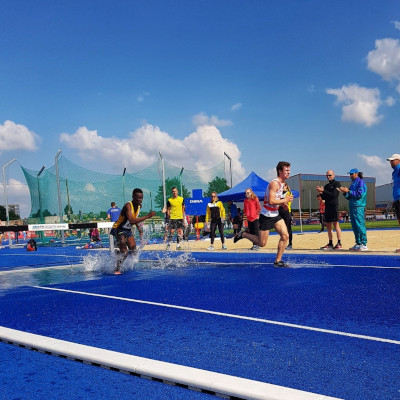

Assistance Publique - Hôpitaux de Paris (AP-HP)
November 2022 - May 2022
Applied Statistics Project:
Text Mining and Health Care Pathway: What are the causes of mortality in heart failure patients?

Double Master's Degree Engineering Student

Double Engineering Degree Student at ENSAE Paris and Mines Saint-Etienne.
French engineering student from a border region with Germany, passionate about applied mathematics and data science.
Find below my notable professional experiences.
Applied Statistics Project:
Text Mining and Health Care Pathway: What are the causes of mortality in heart failure patients?
Advanced Analytics Intern
Find details about my academic background below.
Engineering Master's Degree in Economics and Statistics
Ingénieur Civil des Mines - Master's Degree in Science and Executive Engineering
Semester abroad - KIT Department of Economy and Management
Find below some of my practical skills.

I exercice a lot in my spare time. I train in running and more particularly in middle distance. Improving my personal bests is a real motivation.
In addition to running, I love cycling and regularly go out on the road. With less regularity, I also train in swimming, a sport that I practiced in a club when I was younger.
I also enjoy skiing, tennis, and all sports in general, with friends or family...
Need additional information or a project to suggest?
Do not hesitate to contact me! I will get back to you as soon as possible.